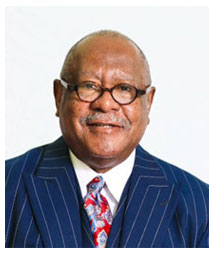

Our Pastor
The Reverend Dr. Thomas L. Bess, Sr. has been in the pastoral ministry for more than 35 years. He began his pastorate at Allen Chapel A.M.E. Church in Macon, GA in 1982. In 1988, he was appointed as Senior Pastor of St. Phillip's Monumental Church in Savannah, GA. In 1991, he was appointed as Senior Pastor at Flipper Temple A.M.E. Church in Atlanta, GA. In 1997, he received an appointment to St. Paul A.M.E. Church where he served until May 2013 when he was assigned to the Awesome Allen Temple.
In addition to his service as pastor, Dr. Bess also served as an Adjunct Professor of A.M.E. Polity at Turner Theological Seminary at the Interdenominational Theological Center from 1994 to 2013. He also served as a Chief Chaplain at Coastal State Prison in Savannah, GA, as well as, Clinical Chaplain at Central State Hospital in Milledgeville, GA. Dr. Bess was appointed Dean of the Board of Examiners and Treasurer for the Sixth Episcopal District which he served honorably.
As a starch supporter of education, Dr. Bess obtained his Bachelor of Arts degree from Fort Valley State University; his Master of Divinity from Turner Theological Seminary (ITC); his Doctorate of Ministry from Columbia Theological Seminary; and matriculated for a year at John Marshall Law School. Dr. Bess is author of The Funeral and co-author of When Black Folks Die.
His greatest gift of service is his ability to shepherd others in their calling to the pastoral ministry. He has many sons and daughters in ministry who have been appointed as Senior Pastors throughout the A.M.E. denomination. He has been a vital resource to many pastors across denominational lines.
His professional organization memberships include a member of Omega Psi Phi Fraternity, Inc., Board of Trustee member of Turner Theological Seminary, and Board of Trustee member of the Interdenominational Theological Center.
Dr. Bess has been happily married to Dr. Gretchen Bess for over 38 years. They are the proud parents of two sons, Stephen and Thomas, Jr. They enjoy traveling and spending time with their granddaughter Mia.
In all of his accomplishments and accolades, Dr. Bess continues to hold fast to Isaiah 40:31, "...those who wait on the LORD Shall renew their strength...They shall mount up with wings like eagles...They shall run and not be weary...They shall walk and not faint."